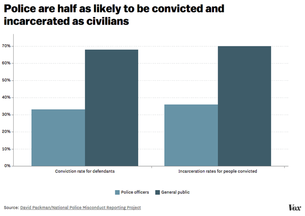

American police shoot and kill far more people than their peers in other countries
Police officers in the US shoot and kill hundreds of people each year, according to the FBI's very limited data
— far more than other developed countries like the UK, Japan, and
Germany, where police officers might go an entire year without killing
more than a dozen people or even anyone at all.
The Economist charted the differences in annual police shooting deaths in the US, UK, Japan, and Germany:
One explanation for this disparity is that violent crime is much more
common in the US, putting police in more situations in which the use of
force is necessary. As data
from the Organisation for Economic Co-operation and Development shows,
the US homicide rate throughout the 2000s was more than three times the
rate of Canada, four times that of the UK, and more than 10 times that
of Germany.
But why does the US have a much higher
violent crime rate than other countries? One explanation: Americans are
much more likely to own guns than their peers around the world. This
means that conflicts — not just between police and civilians but between
civilians — are much more likely to escalate into deadly, violent
encounters. The research bears this out: More guns lead to more gun violence. And for police in particular, one study found that every
10 percent increase in firearm ownership correlated with 10 additional
officers killed at the state level over a 15-year period.
According to survey data compiled by Simon Rogers for theGuardian, the US had 88.8 guns per 100 people in 2007 — compared with 54.8 in the second-closest country, Yemen. Reddit user Phillybdizzlemapped this data, showing just how much the US stands out in gun ownership compared with the rest of the world:
This is a result of cultural and policy decisions made by the US that
have made firearms far more available in America than most of the
world. For American police officers, this means they not only will encounter more guns, but they expect to encounter more guns, making them more likely to anticipate and perceive a threat and use deadly force as a result.
But deadly police encounters have drawn increased criticism over the
past few years as cops have shot and killed unarmed or otherwise
innocent black men and boys, highlighting the troubling racial
disparities in how police use force. For critics of law enforcement, the
disparities indicate that it's not just greater rates of gun ownership
and violent crime that explain the higher number of police shootings in
the US. Perhaps it's the lax legal standards that allow cops to justify
deadly force against suspects who pose no danger, and sometimes are only
perceived to pose a threat to officers because cops hold racial biases
that are endemic in the criminal justice system.
There are huge racial disparities in how US police use force
Black people are much more likely to be shot by police than their white peers.
An analysis of the available FBI data by Vox's Dara Lind
found that US police kill black people at disproportionate rates: Black
people accounted for 31 percent of police killing victims in 2012, even
though they made up just 13 percent of the US population. Although the
data is incomplete because it's based on voluntary reports from police
agencies around the country, it highlights the vast disparities in how
police use force.
Joe Posner/Vox
Black teens were 21 times as likely as white teens to be shot and killed by police between 2010 and 2012, according to a ProPublica analysis
of the FBI data. ProPublica's Ryan Gabrielson, Ryann Grochowski Jones,
and Eric Sagara reported: "One way of appreciating that stark disparity,
ProPublica's analysis shows, is to calculate how many more whites over
those three years would have had to have been killed for them to have
been at equal risk. The number is jarring — 185, more than one per
week."
The disparities appear to be even starker for unarmed suspects, according to an analysis of 2015 police killings by the Guardian.
Racial minorities made up about 37.4 percent of the general population
in the US and 46.6 percent of armed and unarmed victims, but they made
up 62.7 percent of unarmed people killed by police.
These disparities in police use of force reflect more widespread
racial inequities across the entire American criminal justice system.
Black people are much more likely to be arrested for drugs, even though they're not more likely to use or sell them. And black inmates make up a disproportionate amount of the prison population.
Joe Posner/Vox
Some of these disparities are explained by socioeconomic factors —
such as poverty, unemployment, and segregation — that make black
Americans much more likely to commit crime than their white
counterparts. But a review of the research by the Sentencing Project
concluded that throughout various time periods in the past few decades,
the higher crime rates in black communities only explained about 61 to
80 percent of black overrepresentation in prisons. This means that other
factors were behind as much as 39 percent of the disparate rates of
imprisonment for black people.
What are these other factors? One issue is how police enforce the
law. Because minority communities often have higher crime rates, cops
are disproportionately deployed in black neighborhoods — exposing
African Americans to extraordinary amounts of police activity. For
example, this map from Project Know, a drug addiction resource center, shows drug arrests were concentrated in Chicago's low-income neighborhoods, which are mostly black, between January and October 2014:
Some police departments and officers are encouraged to crack down on these neighborhoods as harshly as possible. Until 2014, a federal grant program
financially incentivized local police departments to make as many
arrests as possible for drug crimes. Many police departments also use
the number of arrests as a measure for evaluating individual police
officers for raises and promotions. And in some municipalities — as the
Justice Department found in Ferguson, Missouri, after the police
shooting of Michael Brown — the local government encourages cops to ticket as many people as possible to raise revenue through court fines and fees. These incentives effectively push cops to arrest and ticket minority residents in large numbers.
Another issue may be subconscious racial biases. Studies show, for example, that officers are quicker to shoot black suspects in video game simulations.
Josh Correll, a University of Colorado Boulder psychology professor who
conducted the research, said it's possible the bias could lead to more
skewed outcomes in the field. "In the very situation in which [officers]
most need their training," he said, "we have some reason to believe
that their training will be most likely to fail them."
The racial disparities have fueled criticisms of law enforcement over
the past few years, culminating in the Black Lives Matter movement that
has risen to national prominence due to the controversial police
killings of Brown in Ferguson, Eric Garner in New York City, Tamir Rice in Cleveland, and Freddie Gray
in Baltimore, among others. For critics, the disparities and
high-profile killings have fostered concerns that black lives matter
less to police, and that the next victim of a police shooting could be
just about any black American.
Cities across the country have been riddled with accusations of police abuse
It would be one thing if allegations of police abuse were
focused on one city, state, or region, but multiple investigations by
the media and the US Department of Justice have uncovered patterns of
abuse and excessive use of force — particularly against black residents —
all over the country.
In Baltimore, a September 2014 report by the Baltimore Sun's Mark Puente
found that the city had paid about $5.7 million since 2011 to more than
100 people — most of whom were black — who claimed that officers had
beaten them. Vox's Ezra Klein explained some of the deplorable allegations after Freddie Gray died of a fatal spinal cord injury that he suffered while in police custody:
Before Freddie Gray, there was Starr Brown, who was pregnant and
walking up the front steps of her home when two girls were attacked on
the street. By the time the cops came, the attackers were gone — but
Brown, inside her home, could hear the police berating the women who had
been attacked.
Brown, angry, demanded the cops chase down the attackers rather than
yelling at the victims. An argument began, and the police tried to
arrest Brown. She grabbed a nearby railing, screaming that she was
pregnant. "They slammed me down on my face," Brown later said. "The skin
was gone on my face." The city paid Brown $125,000.
A Justice Department report
released in December 2014, meanwhile, found Cleveland police officers
used excessive deadly force, including shootings and head strikes with
impact weapons; unnecessary, excessive, and retaliatory force, including
Tasers, chemical sprays, and their fists; and excessive force against
people with mental illness or in crisis, including one situation in
which officers were called exclusively to check up on someone's
well-being.
In one case, a police officer shot at an unarmed man wearing only
boxer shorts as he was fleeing from armed assailants, which the Justice
Department called unreasonable and unnecessary:
An incident from 2013 in which a sergeant shot at a victim as he ran
from a house where he was being held against his will is just one
illustration of this problem. "Anthony" was being held against his will
inside a house by armed assailants. When officers arrived on scene, they
had information that two armed assailants were holding several people
inside the home. After officers surrounded the house, Anthony escaped
from his captors and ran from the house, wearing only boxer shorts. An
officer ordered Anthony to stop, but Anthony continued to run toward the
officers. One sergeant fired two shots at him, missing. According to
the sergeant, when Anthony escaped from the house, the sergeant believed
Anthony had a weapon because he elevated his arm and pointed his hand
toward the sergeant. No other officers at the scene reported seeing
Anthony point anything at the sergeant.
In another investigation released after the Michael Brown
shooting in Ferguson, Missouri, the Justice Department found a
pattern of racial bias at the Ferguson Police Department — typically in
an effort to ticket as many low-income black residents as possible in an
attempt to raise local budget revenue through fines and court fees.
Police encounters could get downright abusive, the Justice Department
explained:
We spoke with one African-American man who, in August 2014, had an
argument in his apartment to which FPD officers responded, and was
immediately pulled out of the apartment by force. After telling the
officer, "you don't have a reason to lock me up," he claims the officer
responded: "N*****, I can find something to lock you up on." When the
man responded, "good luck with that," the officer slammed his face into
the wall, and after the man fell to the floor, the officer said, "don't
pass out motherf****r because I'm not carrying you to my car."
By itself, each report exposed deeply troubling problems at an
individual police department. But taken altogether, the reports show
that no single city, state, or region is immune to allegations of police
brutality that critics of law enforcement find so concerning.
There's no good data on how many people police kill each year
The federal government tracks police shootings and killings
through the FBI's Supplementary Homicide Reports (SHR) and the
Bureau of Justice Statistics's Arrest-Related Deaths (ARD), but both
vastly undercount the number of deaths to police.
A 2015 study
by RTI International, which conducted the analysis for the Bureau of
Justice Statistics, found that from 2003 to 2009 and 2011, ARD captured
approximately 49 percent of people killed by police, while SHR captured
46 percent. Neither system picked up about 28 percent of law enforcement
homicides in the US, meaning more than one-quarter of police-caused
deaths weren't tracked at all under ARD or SHR.
Not all of these homicides are unjustified. It's possible that in
many of these cases police responded with force legitimately, perhaps
when a suspect threatened the officers or others. Still, it's difficult
to gauge how many killings are justified and aren't when so much data is
missing.
Criminal justice experts have long known that these measures are
flawed. ARD collects police-caused homicide data through state reporting
coordinators, but the methods of collecting data can greatly vary from
state to state, often depend on differing access to technology, and
sometimes don't directly involve police departments or coroner's
offices. SHR relies on reports submitted by police agencies, but these
reports are voluntary — and some states, like Florida, don't
participate.
"The available data (FBI, Vital Stats, BJS) are worse than
miserable," David Klinger, a criminologist at the University of Missouri
St. Louis, wrote in an email. "They suck and no one should do any sort
of analysis with them beyond using them to say that we have some floor
[regarding] shootings and perhaps note that there are all sorts of
circumstances involved when shootings occur."
The Obama administration has criticized the flawed statistics. In January 2015, former US Attorney General Eric Holder called for better data collection of police killings. The FBI plans
to try to collect better data on police killings, but the new system
will still make such reports voluntary for police departments. Again,
that's the big flaw in how the feds collect data now: It means entire
states, like Florida, New York, and Illinois, can refuse to file any data for police killings year after year.
"The troubling reality is that we lack the ability right now to
comprehensively track the number of incidents of either uses of force
directed at police officers or uses of force by police," Holder said. "This strikes many — including me — as unacceptable."
For critics of law enforcement, the incomplete data is just another
way it's difficult to hold police accountable. Without complete and
accurate statistics, it's impossible to evaluate the extent of racial
disparities in police killings, and how the US truly compares with other
countries in deaths by law enforcement.
Police can use deadly force if they merely perceive a threat
Legally, what most matters in these shootings is whether police
officers reasonably believed that their or others' lives were in
danger, not whether the shooting victim actually posed a threat.
In the 1980s, a pair of Supreme Court decisions — Tennessee v. Garner and Graham v. Connor — set up a framework for determining when deadly force by cops is reasonable.
Constitutionally, "police officers are allowed to shoot under two
circumstances," David Klinger, a University of Missouri St. Louis
professor who studies use of force, told Vox's Dara Lind.
The first circumstance is "to protect their life or the life of another
innocent party" — what departments call the "defense-of-life" standard.
The second circumstance is to prevent a suspect from escaping, but only
if the officer has probable cause to think the suspect poses a
dangerous threat to others.
The logic behind the second circumstance, Klinger said, comes from the Supreme Court's decision in Tennessee v. Garner.
That case involved a pair of police officers who shot a 15-year-old boy
as he fled from a burglary. (He'd stolen $10 and a purse from a house.)
The court ruled that cops couldn't shoot every felon who tried to
escape. But, as Klinger said, "they basically say that the job of a cop
is to protect people from violence, and if you've got a violent person
who's fleeing, you can shoot them to stop their flight."
Alex Wong/Newsmakers via Getty Images
The Supreme Court set the guidelines for police officers' use of force.
The key to both the legal standards — defense of life and fleeing a
violent felony — is that it doesn't matter whether there is an actual
threat when force is used. Instead, what matters is the officer's
"objectively reasonable" belief that there is a threat.
That standard comes from the other Supreme Court case that guides use-of-force decisions: Graham v. Connor.
This was a civil lawsuit brought by a man who'd survived his encounter
with police officers, but who'd been treated roughly, had his face
shoved into the hood of a car, and broken his foot — all while he was
suffering a diabetic attack. The court didn't rule on whether the
officers' treatment of him had been justified, but it did say that the
officers couldn't justify their conduct just based on whether their
intentions were good. They had to demonstrate that their actions were
"objectively reasonable," given the circumstances and compared with what
other police officers might do.
And what's "objectively reasonable" changes as the circumstances
change. "The moment that you no longer present a threat, I need to stop
shooting," Klinger said.
What's "objectively reasonable" changes as the circumstances change.
"One can't just say, 'Because I could use deadly force 10 seconds ago,
that means I can use deadly force again now,'" Walter Katz, a
California attorney who specializes in oversight of law enforcement
agencies, said.
In general, cops are given lot of legal latitude to use force without
fear of punishment. The intention behind these legal standards is to
give police officers leeway to make split-second decisions to protect
themselves and bystanders. And although critics argue that these legal
standards give law enforcement a license to kill innocent or unarmed
people, police officers say they are essential to their safety.
For some critics, the question isn't what's legally justified but rather what's preventable. "We
have to get beyond what is legal and start focusing on what is
preventable. Most are preventable," Ronald Davis, a former police chief
who heads the US Department of Justice's Office of Community Oriented
Policing Services, told the Washington Post.
Police "need to stop chasing down suspects, hopping fences, and landing
on top of someone with a gun," he added. "When they do that, they have
no choice but to shoot."
Cops are almost never prosecuted and convicted for use of force
Police are very rarely prosecuted for shootings
— and not just because the law allows them wide latitude to use force
on the job. Sometimes the investigations fall onto the same police
department the officer is from, which creates major conflicts of
interest. Other times the only available evidence comes from
eyewitnesses, who may not be as trustworthy in the public eye as a
police officer.
"There is a tendency to believe an officer over a civilian, in terms of credibility," David Rudovsky, a civil rights lawyer who co-wrote Prosecuting Misconduct: Law and Litigation, told Vox's Amanda Taub.
"And when an officer is on trial, reasonable doubt has a lot of bite. A
prosecutor needs a very strong case before a jury will say that
somebody we generally trust to protect us has so seriously crossed the
line as to be subject to a conviction."
If police are charged, they're rarely convicted. The National Police Misconduct Reporting Project
analyzed 3,238 criminal cases against police officers from April 2009
through December 2010. They found that only 33 percent were convicted,
and 36 percent of officers who were convicted ended up serving prison
sentences. Both of those are about half the rate at which members of the
public are convicted or incarcerated.

The low conviction and incarceration rates have fed into the idea
among critics of law enforcement that police can get away with using
deadly force even in situations that don't call for it. This poses
concerns for those who want to hold police accountable, but critics also
worry it has fostered a police culture that's too lenient in using
force because cops believe there most likely won't be legal consequences
even if they make a bad call.
Killings of police officers on duty are near record lows
There's no sign that it's more dangerous to be a cop today than it was decades or even years ago.
For much of 2015, Fox News and the New York Post decried a "war on cops," specifically blaming
the Black Lives Matter movement — and its criticisms of excessive
use of force by cops — for enabling a wave of violence against
police officers in the US.
But it looks like 2015 was one of the safest years to be a police
officer in America. Since 1960, only 2013 had fewer on-duty police
officer deaths than 2015.
The Officer Down Memorial Page,
which tracks police officer deaths, estimated 129 police officers died
in the line of duty in 2015, down 3 percent from 2014. This continued
the long-term trend downward, based on the organization's statistics
going back decades.
The single biggest cause of death in 2015 was gunfire. Out of 129
deaths, 39 were gun homicides, and two were accidental
shootings. But deadly shootings were down from 2014, when 49 cops
died to gunfire.
The drop in police deaths coincides with a dramatic drop in crime in recent decades: Violent crime rates in the US droppedby roughly 49 percent between 1994 and 2014, according to FBIdata.
Still, police organizations claim to feel increasingly threatened
following the growing criticisms and protests against law enforcement
over racial disparities in use of force, particularly after the police
killings of Eric Garner in New York City, Freddie Gray in Baltimore, and Michael Brown
in Ferguson, Missouri. Tensions in police departments were especially
high after the killings of New York City police officers Wenjian Liu and Rafael Ramos and the riots in Baltimore over the death of Freddie Gray while in police custody.
In response, police have sometimes leveled their own criticisms and protests. In
comments to media, Chuck Canterbury, national president of the
Fraternal Order of Police, the country's largest police union, suggested cops should be shielded from attacks in hate crime legislation. In New York City and Baltimore, police officers engaged in a "slowdown" in which they carried out fewer arrests — a tactic that police have historically used
to protect themselves, avoid public scrutiny, purposely decrease
public revenue raised through citations, and show critics what life may
be like without law enforcement.
Some defenders of police referenced the "Ferguson effect":
the idea that more scrutiny of police since the Ferguson, Missouri,
protests has demoralized cops and emboldened criminals, leading to more
crime. A report by the Brennan Center for Justice, a criminal justice group, found that murder rates significantly increased in some cities in 2015, but overall crime dropped.
The protests by police also sometimes backfired, leading to further criticisms that law enforcement are too sensitive and trying to escape public accountability. In a January 2015 Quinnipiac University survey,
57 percent of nearly 1,200 respondents in New York City said cops
should be disciplined if they deliberately made fewer arrests or wrote
fewer tickets.
Still, many defenders of police continue claiming that cops are under
serious threat — potentially in an attempt to shift the conversation
from heightened levels of police brutality.
The federal government has helped the militarization of police
Over the past few decades, the federal government has helped
equip local and state police departments with military-grade equipment
to help them fight the war on drugs
and war on terror. But until recently, the programs came with lax
training and oversight, leading to what many critics of law enforcement
described as abuse.
The criticisms blew up during the protests in Ferguson, Missouri, over the police shooting of Michael Brown.
Police often deployed military-grade equipment — such as tear gas,
rubber bullets, sound cannons, and mine-resistant armored trucks —
against largely peaceful protesters, sometimes agitating the situation
and causing demonstrations to unnecessarily escalate into tense and even
violent conflicts.
Scott Olson/Getty Images
Police obtained much of the equipment at little to no cost through
several federal programs. The 1033 program, for
example, transferred surplus military-grade equipment from the
Pentagon to police, but it didn't require any training or oversight for
the equipment's use. It was also loaded with what many experts viewed as
a perverse incentive: Police had to deploy the equipment at least once
within a year to keep it, potentially motivating them to use the gear
when it wasn't necessary.
The federal government also provided equipment through grants from the Department of Homeland Security and Department of Justice.
In response to the controversy in Ferguson, the Obama administration imposed new restrictions
on the federally provided equipment: Some gear was outright banned,
while other weapons began requiring data collection and training.
Here is some of the equipment that was banned:
Anand Katakam/Vox
Here is some of the equipment that was restricted:
Anand Katakam/Vox
But there's a loophole: Police departments can obtain the equipment
on their own terms by purchasing it themselves. Whether police can
afford to, or will choose to, remains to be seen — but departments have,
for example, used funds from seized assets to buy military equipment in the past.
The militarization of police became a major point of contention
following the shooting of Michael Brown. The military gear played into
the idea that police in the US are out of control — not just in how many
people they kill and the racial disparities underlying the killings,
but also in the equipment law enforcement will use and the lengths
they'll go through to suppress protesters and critics.
Reforms have focused on community policing and accountability — but that may not be enough
Facing protests and federal pressure, police departments across
the country have started to undertake reforms to build trust and
stronger ties with their communities through transparency and
accountability.
Camden, New Jersey, has earned widespread praise
for seeing its rates of violent crime, murder, and shootings fall after
it disbanded its police force and built a new one focused on community
policing. The idea is that these community-focused tactics — in which
the police work with community groups, such as churches, to guide their
priorities — can dismantle the us-versus-them mentality between police
and residents in some places, and build a stronger police presence
that's more familiar with locals and, as a result, less likely to resort
to force to settle disputes.
In Cleveland, the local government agreed to reforms following a federal investigation
of the police department that found a pattern of excessive use of
force. As part of the changes, the city will establish a commission that
will act as a link between the police department and community groups,
as well as new use-of-force guidelines, improved training, and more
oversight through strengthened watchdog agencies, an appointed civilian
to head the internal affairs unit, and a new inspector general that
will watch over cops. More specifically, police officers will also be
required to stop pistol whipping people in the head, and document each
time they unholster their guns.
Other reformers, including the Obama administration, have pushed police-worn body cameras, which could help hold law enforcement accountable and deter excessive use of force by recording most or all their actions.
Recording the police proved its worth time and time again in 2015. After the police shootings of Walter Scott in North Charleston, South Carolina, and Samuel DuBose
in Cincinnati, video footage of the shootings proved that police lied
and exaggerated in their accounts of the events. Without such footage,
prosecutors and juries may have been left to the whims of police
accounts to decide whether the officers involved should be punished, and
the cops may have gotten away with no criminal charges. With the
footage, it was much more plausible that the cops did something wrong,
and they were charged accordingly.
Still, critics worry these types of reforms won't be enough until the
law dictating use of force changes. The problem is rooted in two
issues: Police are allowed to use deadly force when they
reasonably perceive a threat, but they may be more likely to perceive a
threat against black suspects due to underlying racial biases.
A growing body of research has found that subconscious racial biases may make police more likely to shoot and kill black men. For example, studies
by Josh Correll, a University of Colorado Boulder psychology professor,
show that officers are quicker to shoot black suspects in video game simulations.
At the same time, two Supreme Court rulings
in the 1980s established legal guidelines that allow police to use
deadly force when they reasonably perceive a threat, even if a threat
isn't actually present. Police and their supporters say this loose legal
standard is necessary so cops don't hesitate during split-second
decisions and get hurt or killed. But it's been knocked by critics of
police, who say the standard gives cops a license to kill innocent or
unarmed people.
So police are only required to reasonably perceive a threat to use
deadly force, but, based on the research, the threat they perceive may
be more about race than about whether a suspect is really carrying a
gun. The only way to fix that conflict may be to make it more difficult
for police to legally use force, or to find a way to curtail and control
subconscious racial biases. In that context, reforms focused on
community policing or body cameras may not go far enough.
Since the August 2014 police shooting of Michael Brown
in Ferguson, Missouri, police in America have been under heightened
scrutiny. The Black Lives Matter protests in particular have shined a
light on what many see as a systemic emphasis on excessive use of force
by police, particularly on racial and ethnic minorities.
So here's what you need to know about use of force by police in America.